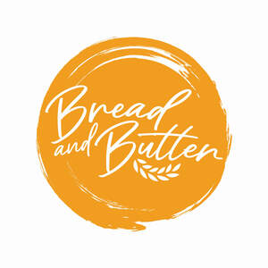

Trade Mark Journal No.2025/025 20 June 2025
UK00004212540 2 June 2025 (29,30)

- Class 29
- Butter; Garlic butter; Honey butter; Butter for use in cooking.
- Class 30
- Bread; Multigrain bread; Bread biscuits; Wholemeal bread; Naan bread; Rye bread; Bread buns; Bread and buns; Toasted bread; Pita bread; Unleavened bread; Bread crumbs; Bread doughs; Bread pudding; Garlic bread; Fruit bread; Soda bread; Pitta bread; Bread rolls; Rolls (Bread -); Rolls [bread]; Gluten-free bread; Danish bread; Malt bread; Bread (Ginger -); Ginger bread; Currant bread; Unfermented bread; Pre-baked bread; Fresh bread; Nan bread; Bread sticks; Wholemeal bread mixes; Danish bread rolls; Flat bread; Stuffed bread; Low-salt bread; Steamed bread; Bread mixes; Whole wheat bread; Semi-baked bread; Sopapillas [fried bread]; Corn bread mix; Hamburgers contained in bread buns; Sandwich wraps [bread]; Hamburgers contained in bread rolls; Soft rolls [bread]; Breads; Chocolate for confectionery and bread; Burgers contained in bread rolls; Bread concentrates; Malted bread mix; Cornflour bun bread (almojábana); Bread flavoured with spices; Bread flavored with spices; Filled bread rolls; Chocolate spreads for use on bread; Butter biscuits; Unleavened bread in thin sheets; Hamburgers being cooked and contained in a bread roll; Bread made with soya beans; Bread with soy bean; Fruit breads; Mixes for the preparation of bread; Hot sausage and ketchup in cut open bread rolls; Bread casings filled with fruit; Bread improvers being cereal based preparations; Toasted cheese sandwich; Pizza flour; Bread with sweet red bean; Toasted cheese sandwich with ham; Hushpuppies [breads]; Wheat flour [for food]; Stuffing mixes containing bread; Wheaten flour; Pumpernickel; Toasted grain flour; Biscuits for cheese; Danish butter cookies; Baguettes; Fruited malt loaf; Rye flour; Potato flour for food; Potato flour [for food]; Onion or cheese biscuits; Crisp breads; Snack food products made from rusk flour; Barley flour [for food]; Barley flour for food; Rice crusts; Wholemeal pasta; Snack foods consisting principally of bread; Pizza dough; Toasted sandwiches; Croissants; Snack food products made from potato flour; Flour for doughnuts; Corn flour [for food]; Rice biscuits; Flour for food; Snack food products made from rice flour; Cereal flour; Dough flour; Wheat flour; Rice flour porridge; Wholemeal rice; Peanut butter confectionery chips; Foodstuffs made from dough; Snack food products made from cereal flour.
CAMELOT CHILLED FOODS LTD